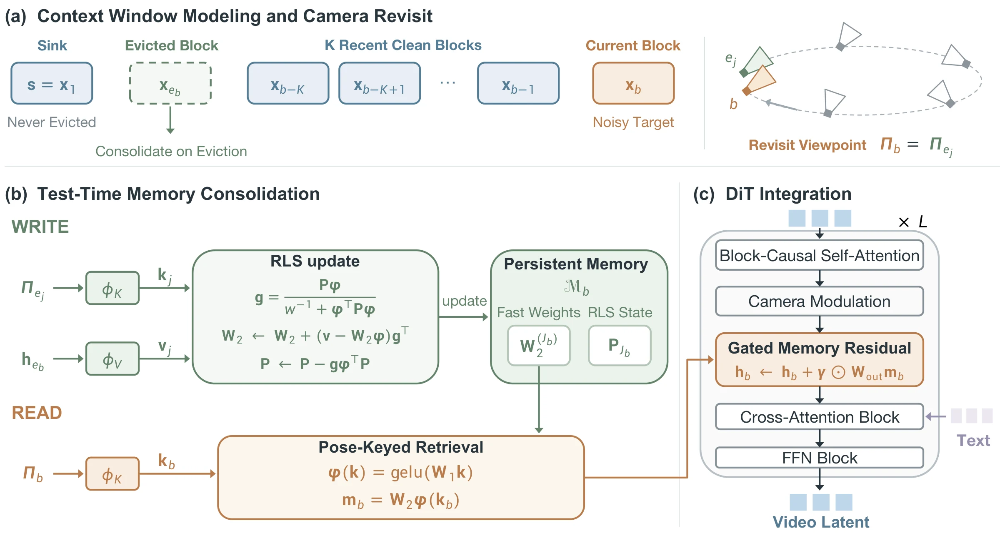
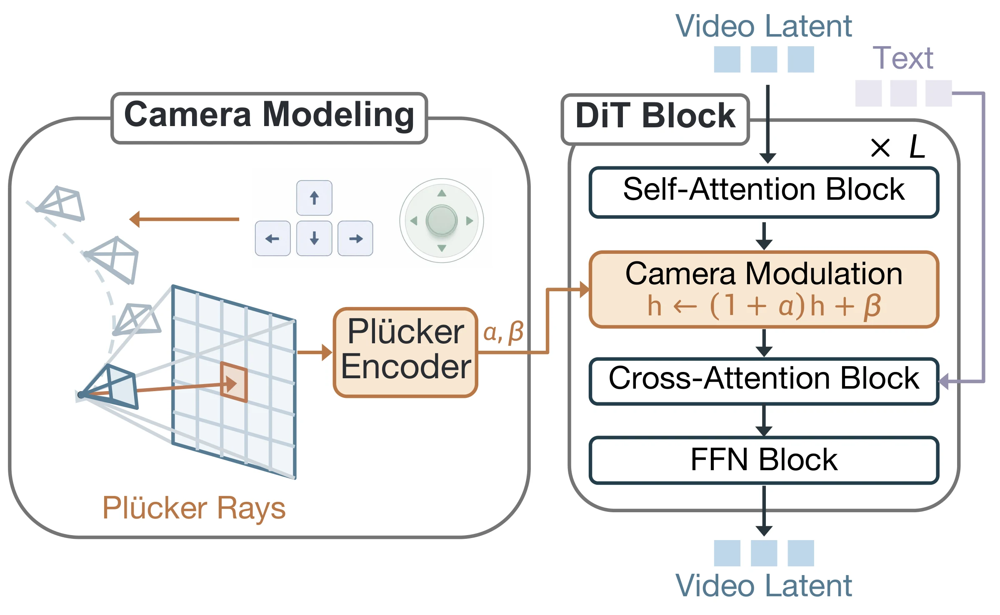
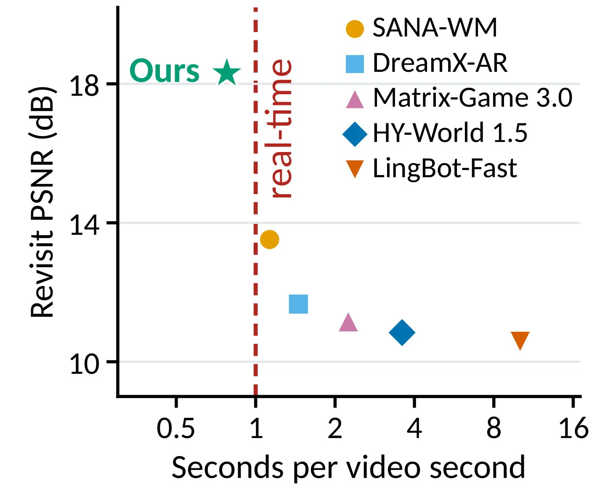
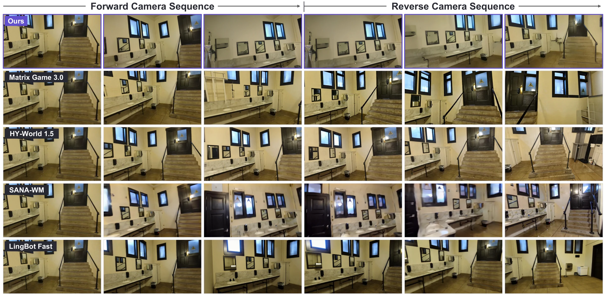
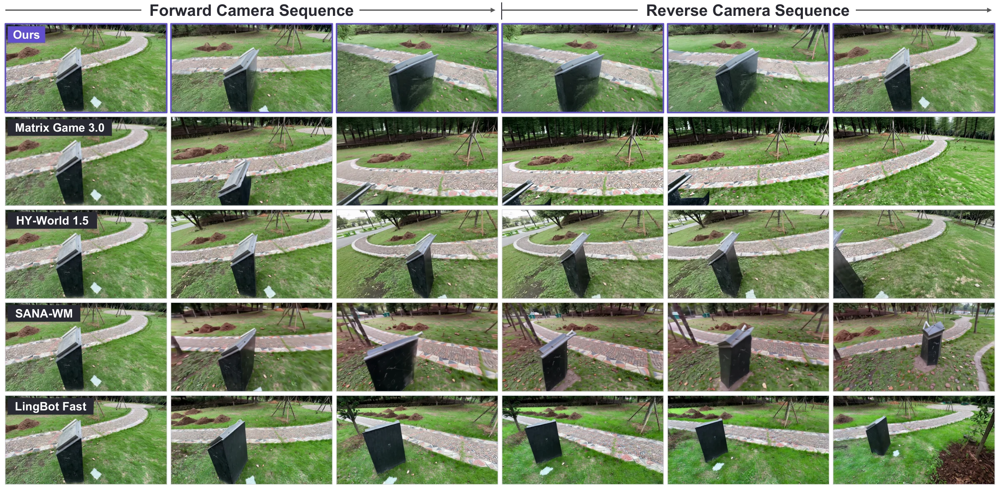

Abstract
Recent advances in video world models have enabled plausible interactive environments, yet long-horizon generation places a fundamental demand on visual memory: the previously observed world must remain consistent as the model continues to generate. Existing autoregressive approaches often implicitly rely on the generative model itself to retain such information, making persistent scene memory difficult to maintain beyond the active context. We introduce World-T3, a camera-controlled video world model with a test-time training memory that consolidates past observations into dedicated model parameters. To robustly update this memory, we propose a recursive least-squares rule that incrementally absorbs novel visual features via online pose-keyed memory updates. Our TTT memory reads out previously observed scene features from the fast-weight state by camera pose, enabling consistent generation with constant storage and per-step computation regardless of rollout length. To facilitate real-time interactive generation with this robust memory, we further distill the autoregressive model into a few-step generator via dual-teacher distribution matching. On a long-horizon revisit benchmark, World-T3 raises revisit PSNR from 13.52 to 18.31 dB and reduces absolute rotation error from 3.344° to 1.075° relative to the strongest baseline on both metrics, while sustaining 20.6 FPS at 1280×704 on a single NVIDIA B200 GPU.
Out-and-Back Revisits
Each 10-second camera trajectory moves forward for 5 s, then retraces its path in reverse. A model with persistent memory should end on the same view it started from. All methods receive the same first frame, text prompt and camera trajectory.
Top row: Ours, Matrix-Game 3.0, HY-World 1.5. Bottom row: SANA-WM, LingBot-Fast, DreamX-AR. 16 FPS, 160 frames.
30-Second Rollouts
Longer rollouts along real camera motion, with memory updated online throughout. The three videos play on a shared timeline. Keyboard overlays are part of the original recordings.
Method
Starting from a pretrained text-image-to-video diffusion model, World-T3 is built in three progressive stages: camera control, persistent memory, and few-step real-time generation.
Bidirectional camera-conditioned teacher
Plücker raymaps modulate every DiT block through adaptive layer-norm, giving the model 6-DoF camera control.
Autoregressive teacher with TTT memory
Block-causal generation over a bounded context, plus a pose-keyed fast-weight memory that absorbs blocks as they leave the context.
Dual-teacher few-step distillation
Distribution matching against both teachers compresses sampling to 4 steps while keeping local quality and long-horizon consistency.
Test-Time Memory Consolidation

Write: recursive least squares
Smooth camera motion produces near-collinear pose keys. A naive write would keep reinforcing the same directions, so each write instead solves a ridge regression over all past key–value pairs, online:
\(\mathbf{P}\boldsymbol{\phi}\) whitens the update, so only the part of the observation that memory does not already hold changes \(\mathbf{W}_2\). The result is the exact ridge solution at every step, independent of observation order.
Read: pose-keyed retrieval
To generate block \(b\), memory is queried with the target camera pose alone:
Keys depend only on camera raymaps and values come from clean latents, so memory is decoupled from diffusion noise. Storage is fixed at \((\mathbf{W}_2, \mathbf{P})\) per layer, however long the rollout runs.
Stage 1: camera conditioning

Results
120 out-and-back clips (10 s, 1280×704, 16 FPS) from the test split. Revisit metrics pair outbound and return frames at the same requested pose, with all gaps beyond our 21-latent-frame context window.

| Method | Steps | Revisit ↑ | Camera ↓ | FPS ↑ | ||
|---|---|---|---|---|---|---|
| Sem. Sim. | PSNR | RotErr° | CamMC | |||
| Matrix-Game 3.0 | 3 | 0.8225 | 11.15 | 11.179 | 0.2958 | 7.1 |
| HY-World 1.5 | 4 | 0.8563 | 10.84 | 12.864 | 0.3484 | 4.5 |
| DreamX-AR | 4 | 0.8768 | 11.66 | 8.011 | 0.2276 | 11.0 |
| LingBot-Fast | 4 | 0.8580 | 10.59 | 9.817 | 0.2639 | 1.6 |
| SANA-WM | 4 | 0.9200 | 13.52 | 3.344 | 0.1200 | 14.2 |
| Ours (Stage 2) | 50 | 0.9524 | 16.69 | 1.308 | 0.0381 | 4.4 |
| Ours (Stage 3) | 4 | 0.9610 | 18.31 | 1.075 | 0.0318 | 20.6 |
Bold: best, underline: second best. Full table with VBench, RPE and peak memory in the paper.
Qualitative Comparison


BibTeX
@article{wu2026worldt3,
title = {World-T$^3$: Test-Time Training as Persistent Memory for Real-Time Video World Models},
author = {Wu, Junyi and Li, Zekun and Yang, Chenhongyi and Guo, Chen and Yang, Lingchen and
Zhang, Yongan and Zhang, Xinyi and Hu, Hongbing and Rymkowski, Bartek and
Sridhar, Srinath and Yan, Yan and Huang, Xijie},
journal = {arXiv preprint},
year = {2026}
}